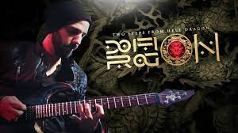
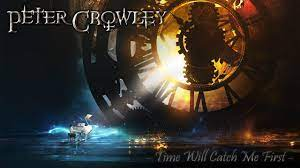

Inicio
Mejores Tracks
M. Programas
M. Instrumentos
M. Compositores

DragonWing
Duración:
2min 58seg
Fecha de Publicación:
29 Marzo del 2019
Orquesta:
Two Step From Hell
Compositor:
Claudio Pietronik (Guitarrista)
Enlace:
Pulse Aquí

Time Will Catch Me First
Duración:
4min 17seg
Fecha de Publicación:
12 Marzo del 2019
Orquesta:
Peter Crowley Fantasy Dream
Compositor:
Peter Crowley
Enlace:
Pulse Aquí
Creation of Eart
Duración:
5min 47seg
Fecha de Publicación:
11 Diciembre del 2014
Orquesta:
Two Step From Hell
Compositor:
Thomas Bergersen
Enlace:
Pulse Aquí